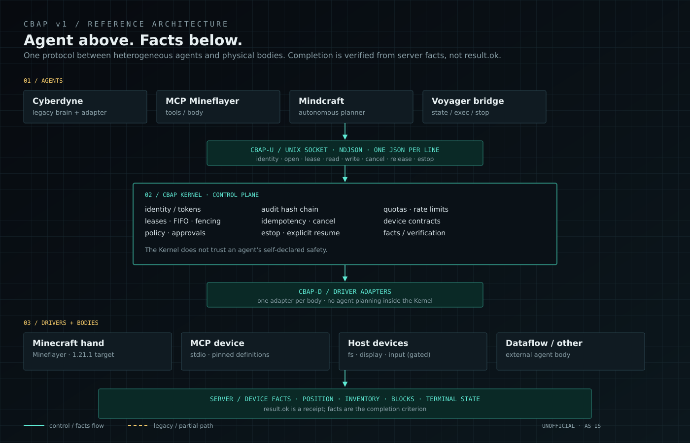

Facts, not receipts
Inventory, position, blocks, and task terminal state count. An adapter saying "ok" or a command being sent does not count as completion.
AGENT ↔ PHYSICAL WORLD / CPNC / CBAP v1
UNOFFICIAL OPEN-SOURCE PROTOCOL
NEKXSR Core · 临界协议：中枢核
A protocol where an agent acquires a device, executes an action, and verifies the result through server-authoritative facts.
The main repository is CPNC; each agent adapter lives in its own subrepo.
01 / WHAT IT IS
The question is independent of Minecraft: what interface and completion criteria does an agent need when information is incomplete, actions have cost, and the world changes? Minecraft is simply a low-cost, observable sandbox.
Inventory, position, blocks, and task terminal state count. An adapter saying "ok" or a command being sent does not count as completion.
One writer at a time; FIFO waiting, explicit release, and per-device estop. Cooperation is not the safety mechanism.
The main repo depends only on the driver interface. Cyberdyne, MCP, Mindcraft, and Voyager each live in their own subrepo.
02 / ARCHITECTURE
CBAP-U faces agents; CBAP-D faces devices; the Kernel owns leases, safety, cancellation, and audit. The canonical diagram is in the repository.

Solid cyan = control / facts flow; gold dashed = legacy or partial path. The Kernel controls access and evidence; it does not plan or execute the agent's strategy.
03 / PROTOCOL NOTES
These rules come from real contention, disconnects, estops, and recovery.
Not result.ok. Server position, inventory, blocks, and terminal task state are the completion criteria.
Leases are scoped per device; waiters are FIFO; release, estop, and cancel are distinct operations.
Unknown input, ambiguous state, or missing arguments result in refusal with a reason — never a silent swallow.
Every action leaves a record; inflight requests and reconnects do not replay blindly; dangerous state can be stopped.
Different agents only implement adapters and device contracts. The core stays thin; bodies and planners evolve separately.
04 / TRUST BOUNDARY
The Kernel does not trust an agent's self-declared safety. Identity, leases, audit, MCP child processes, and operator actions each have explicit boundaries; failure is closed by default.
UDS 0600 + SO_PEERCRED; token files 0600 and O_NOFOLLOW; per-agent uid/token; device allowlists; ordinary agents do not get estop/admin.
One writer, FIFO, TTL, fencing token; release/estop/cancel are distinct; inflight, session, and UID rate limits.
JSONL seq + hash chain; checkpoint detects tail truncation; optional HMAC; remote sink can require seq/hash ack; audit failure enters a safe state.
Env allowlist, rlimits, process-group termination, output caps; manifest HMAC (enforceable); full tool/instruction pin; estop needs safe-state evidence; optional isolated UID and bwrap/nsjail.
Local-first console; HttpOnly session, Host/Origin checks, CSP, login throttling; lease release, two-person approval, SLA notice, registry reload, explicit resume; remote bind requires TLS, mTLS optional.
Same UID/root, malicious MCP facts, unverified physical estop, TPM/HSM, and formal verification remain out of scope. Console mTLS is not end-to-end Kernel mTLS.
approvals.ops gate high-risk actions. Estop needs no approval; resume is an explicit operator decision after failure. Read the full security boundary ↗MCP / UPSTREAM STATUS
SEP #3452 is still discussing tool-definition integrity. CPNC v1.7.5 adds a full JCS pin and same-connection drift checks, but this is not an official MCP fix and does not solve 3D execution authority.

Definition, instructions, and scope integrity are still under discussion. CBAP does not present thread discussion as an official conclusion.
Complete tool objects, serverInfo, instructions, RFC 8785 JCS; legacy pins fail closed; tools/list is rechecked before actions.
A digest detects a changed menu, not whether a remote server follows it. Facts, approval UI, attestation, and sandboxing remain boundaries.
PROTOCOL / LONG-TERM
Model calls, tool discovery, agent-to-agent tasks, and UI rendering each have their own standards. CBAP holds the device-control, authorization, facts, and evidence layer; other layers get adapters, not copies.

CBAP core: device contract, lease, cancel, estop, policy, facts, audit. Other layers do not get stuffed into the Kernel.
MCP for tools, A2A for agent tasks, OpenAI Responses / Agents SDK for model calls. CBAP connects through adapters and does not rewrite them.
H1 fixes boundaries and interop; H2 adds async, signed envelopes, and OTel; H3 adds attestation hooks, multi-tenancy, and certification.
05 / CPNC OS
CPNC OS 0.1 is a CPNC runtime layer on the DSH OS base: GRUB selects CPNC/Python versions, Control Center shows the active slot and supports hot-swap, and Host Bridge exposes an allowlisted host surface through CPNC.
One GRUB entry per installed CPNC slot; kernel arguments carry cbap.cbap= and cbap.python=.
A local Tk panel shows the active CPNC/Python, slots, and hot-swap entry. No root shell is exposed to agents.
host://fs, host://display, host://input/mouse, host://input/keyboard, and legacy host://desktop; input is off by default.


host://fs is an allowlist, not the host root.hello-from-vm.txt into the host allowlist directory through CPNC. ISO and source: dsh-os-build.06 / AGENT SUBREPOS
Each subrepo owns its adapter, device/mapping, tools, and smoke test. The main repo owns the interface and conformance.
Legacy brain retained; the default path goes through bridge_cbap.py. The root direct shim is removed and old source is frozen in the archive.
A real MCP body. Public MCP tools map to CBAP read/write/poll/estop; MCPDriver speaks stdio JSON-RPC.
Mindy brings its own planner. CBAP observes state, delivers prompts, and stops; it does not pretend to be a low-level action driver.
Mineflayer bridge only: state / exec / forward / say / stop. Real 1.21.1 bridge passes 8/8; local-Qwen loop 3/3; upstream Voyager agents over CBAP complete a 3-task sequence 3/3.
Forge 1.20.1 minimal bridge source. Not compiled and not run against a real server; not presented as active.
Bridge overhead is sub-millisecond. The real latency is Minecraft actions, agent planning, and the LLM.
DETAILS / SOURCE / EVIDENCE
This site is a front door only: no mirrored docs, no local service, no runtime data.